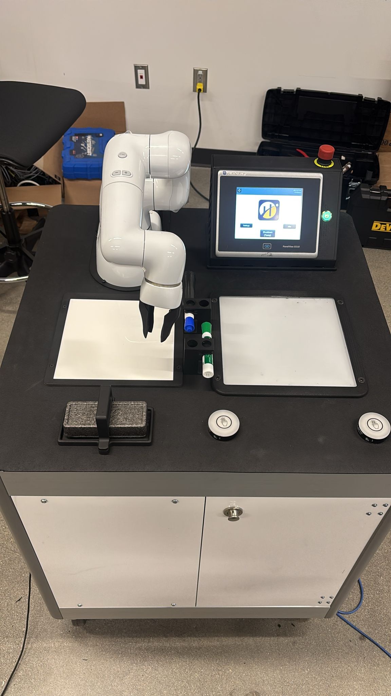

Projects
Follow My LinkedIn
About Me
Resume
Home
Contact
Dark Mode
My Projects
Automated blinds
Website development
Camera Machine Learning
Unity Game Making
Step by Step process for my Camera Machine Learning

Before I get into the steps, I'll explain the project. I am creating a robotic arm game called "DrawBot," where you compete against the robot arm in drawing an image. I am using a
sick technologies camera
to take pictures of images to create a database, where I can grade the images to create a grading system so every time someone plays the game, you will get a score based on how good your drawing is.
Wire the camera correctly
Connect the Camera to the PLC(Programmable Logic Controllersl)
Take pictures with the sick camera software
Train the camera with the images you take
Adjust the training based on how strict you want the camera to be
Use the value given on the software to display on the HMI(Human Machine Interface)